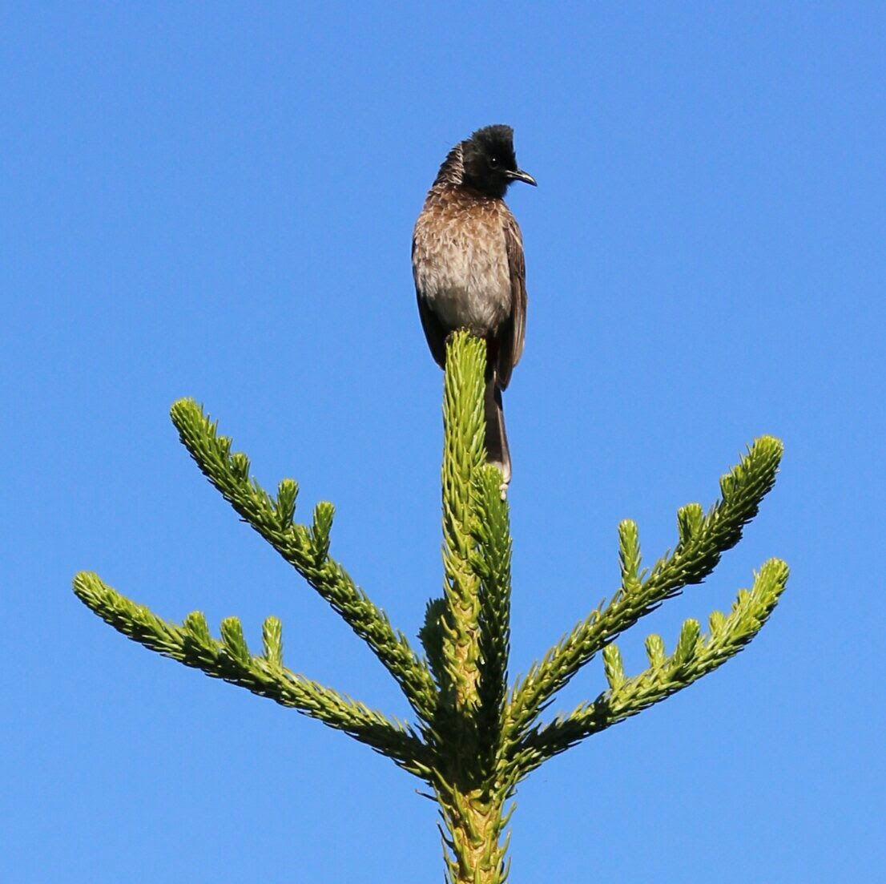
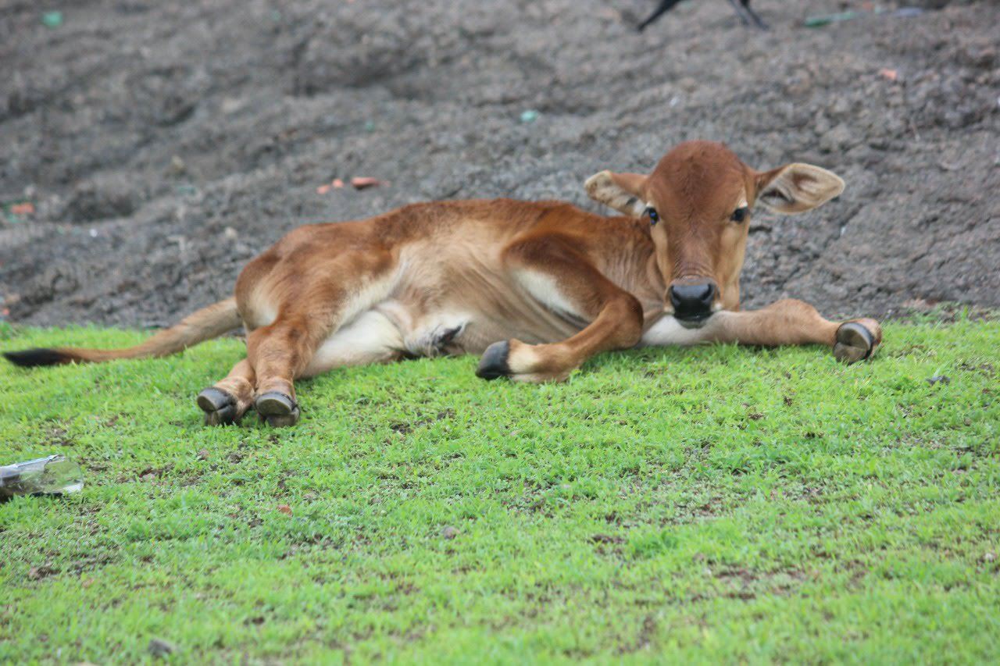
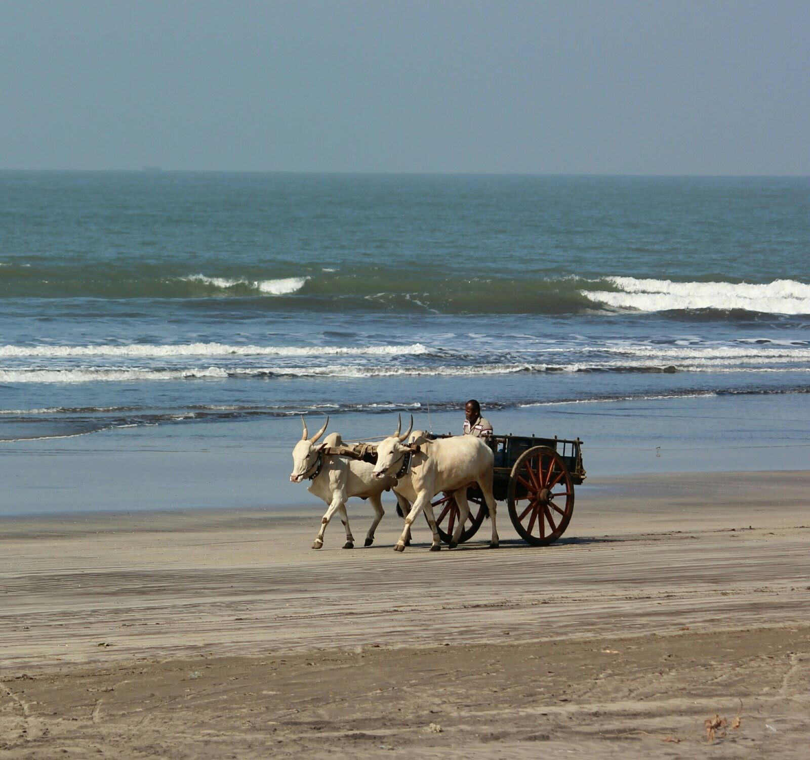
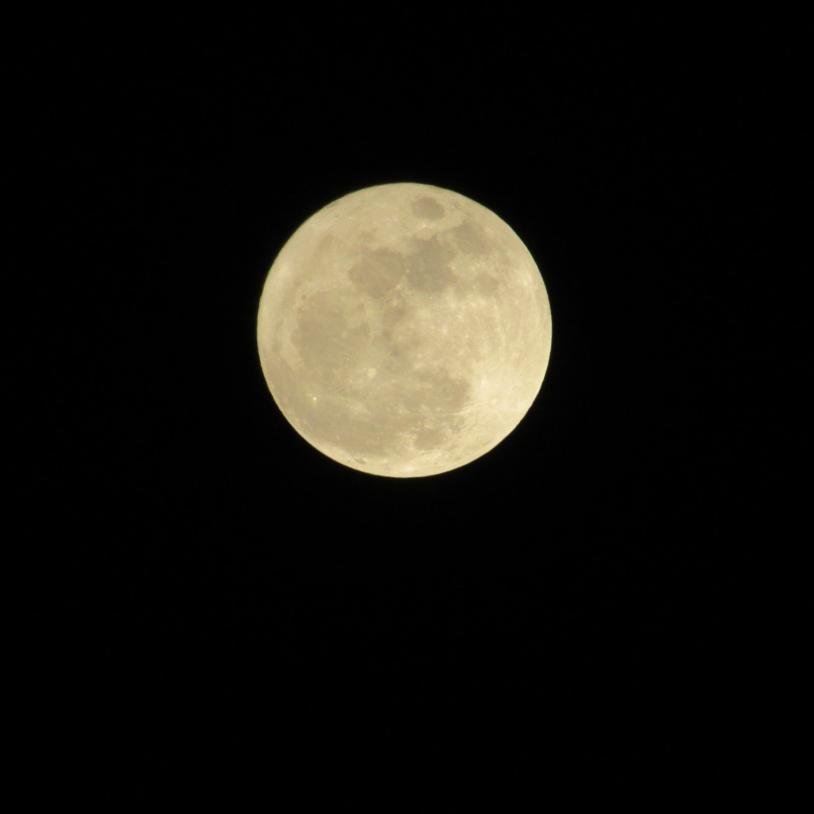

In my free time, I love to watch Movies , TV Series and Sometimes Animes too.
I am not much of a reader but I love to read some books now and then.
Here's a small list of my favourite stuff:
Movies
The Godfather
Interstellar
Titanic
Transformers
Harry Potter Series
Lord of the Rings Series
TV Series
Rick and Morty
Game of Thrones
WestWorld
Sherlock
Black Mirror
Photography
I might have mentioned it before, I am not much of a Photographer but I do love to take pictures of
Beaches , Flowers and Animals more than Humans.
Here are some of the pictures I took



